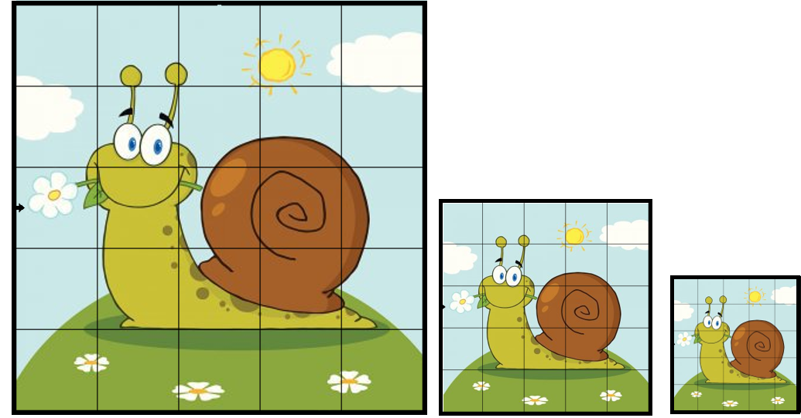

Ampliación Espacial
La "ampliación especial doble" en relación a las imágenes digitales generalmente se refiere a un proceso en el que una imagen se amplía dos veces su tamaño original utilizando operaciones matriciales. Este proceso se utiliza comúnmente en la mejora de la resolución de una imagen sin degradar significativamente la calidad visual.
Disfruta de la música mientras exploras este contenido.
La ampliación especial doble es un método fundamental en el procesamiento de imágenes que se utiliza para aumentar la resolución de una imagen digital. La necesidad de ampliar imágenes sin perder calidad es esencial en numerosos campos, como la fotografía digital, la medicina, la visión por computadora y la impresión de alta calidad.
Este proceso implica duplicar el tamaño de una imagen en ambas dimensiones (ancho y alto) mediante el uso de operaciones matriciales, lo que permite preservar la información visual y los detalles de la imagen original.
Proceso de Ampliación Especial Doble
La ampliación especial doble se realiza a través de una serie de operaciones matriciales que se aplican a cada píxel de la imagen original. A continuación se describen los pasos clave involucrados en este proceso:
1. Duplicación de la Matriz:
La imagen original se representa como una matriz de píxeles, donde cada elemento de la matriz corresponde a un valor de color en la imagen. Para realizar la ampliación especial doble, esta matriz se duplica en ambas dimensiones, lo que significa que se crea una nueva matriz con el doble de ancho y el doble de alto que la matriz original.2. Interpolación:
Para llenar los nuevos píxeles en la matriz ampliada, se utiliza la interpolación. La interpolación es un proceso que calcula valores de píxeles intermedios basados en los valores de los píxeles vecinos en la imagen original. Hay varias técnicas de interpolación disponibles, como la interpolación bilineal, la interpolación bicúbica, etc., que determinan cómo se calcularán estos valores intermedios.3. Filtro de Suavizado:
Después de aplicar la interpolación, es posible que la imagen ampliada tenga un aspecto más suave o borroso. Para mejorar la calidad visual, se puede aplicar un filtro de suavizado para reducir los artefactos y las irregularidades en la imagen.
Aplicaciónes de la Ampliación Especial Doble
1. Mejora de Fotografías Antiguas:
Permite mejorar la calidad y el tamaño de fotografías antiguas o de baja resolución sin perder detalles.2. Impresión de Alta Calidad:
Se utiliza para generar imágenes de alta resolución adecuadas para la impresión en grandes formatos.3. Visión por Computadora:
Ayuda a mejorar la calidad de las imágenes capturadas por cámaras de vigilancia o cámaras de baja resolución en aplicaciones de visión por computadora.La ampliación especial doble es un proceso crucial en el procesamiento de imágenes digitales que utiliza operaciones matriciales y técnicas de interpolación para aumentar la resolución de una imagen sin degradar la calidad visual. Esta técnica tiene aplicaciones significativas en diversas industrias y desempeña un papel importante en la mejora de la calidad de las imágenes digitales.
La elección de la técnica de interpolación y la aplicación de filtros de suavizado son consideraciones clave en el proceso de ampliación especial doble. El desarrollo continuo de algoritmos y métodos mejorados sigue siendo un área de investigación activa en este campo.